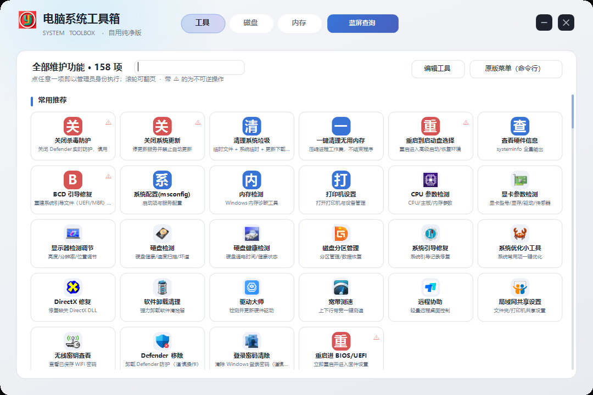
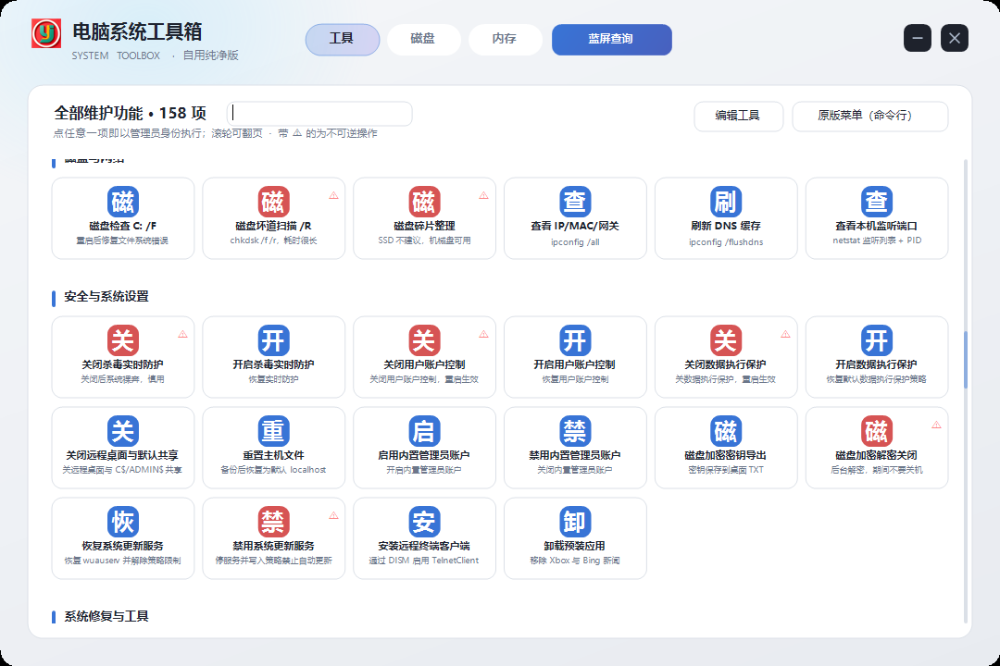
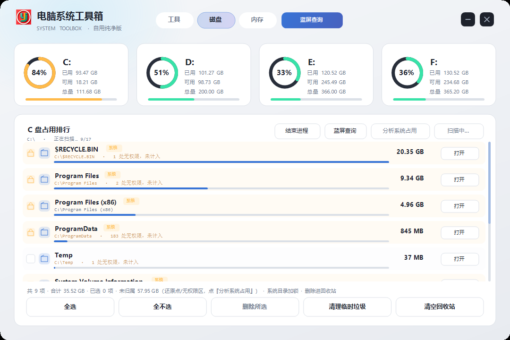
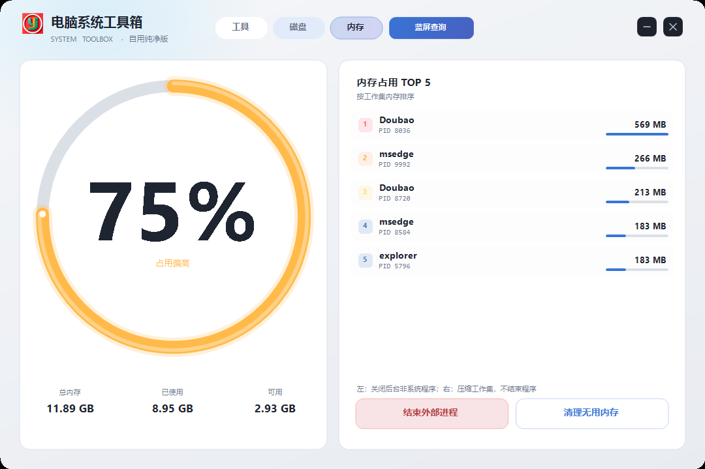

从清理优化、驱动备份到硬件检测、系统修复，常见操作集中在一个界面里，无需到处找软件、记命令。
所有工具与命令封装在一个 EXE 内，运行时自动释放到本地目录，不弹安装向导、不写系统注册表，用完即走。
CPU / 显卡 / 内存 / 硬盘检测、分区管理、网络修复、驱动大师、卸载清理、远程协助等常用绿色程序直接内置调用。
六列大图标网格布局，按功能分组排列，每张卡片带名称与一行灰色小字功能说明，跟随系统明暗主题。
顶部搜索框输入关键词即可即时过滤工具；支持自定义增删工具，也可切换查看全部原始命令行菜单。
磁盘页展示各盘符占用环形图与目录排行；内存页显示占用表盘与进程 TOP 5，一键结束后台进程、清理无用内存。
关闭防护、禁用更新、强制删文件、清除密码等不可逆操作均带红色三角提示，执行前明确告知风险。
覆盖系统清理、休眠与虚拟内存、界面右键、驱动备份、硬件信息、磁盘网络、安全设置与系统修复等场景。
高频检测、修复、网络、安全工具快捷入口，开箱即点。
防护开关、账户控制、数据执行保护、远程共享、磁盘加密、更新服务等。
SFC / DISM 修复、打印后台、WMI 修复、注册表与组策略、重启进高级菜单 / BIOS。
CPU、显卡、显示器、系统信息、内存稳定性与压力检测、烤机测试。
硬盘检测、读写测速、固态评分、健康检测、分区管理、碎片整理、存储检测。
宽带测速、网络测试、组件修复、诊断、局域网共享、远程协助、无线密钥查看。
驱动大师、软件卸载、Dism++、DirectX 修复、系统故障修复、数据恢复。
右键菜单管理、火绒右键、右键管家、按键重映射、经典开始菜单、轻松设置。
开机启动项管理、启动设置、参数调校、超级工具箱、优化小工具、关闭更新。
鼠标测试、鼠标双击测试、键盘测试、键盘测试软件、虚拟键盘。
引导修复、文件粉碎、Everything 秒搜、备份还原、启动盘、WinHex、装系统、批量改名。
浏览器密码查看、Defender 移除、登录密码清除（谨慎操作）。
缩略图 / 更新缓存 / 预读缓存清理、新机一键优化、四项优化、预读服务开关。
休眠与快速启动开关、虚拟内存开关与自动管理。
去除快捷方式箭头、关闭广告推送、经典 / 默认右键、关闭标签页、管理员 CMD 入右键。
系统内导出驱动、打包 ZIP、PE 手动 / 自动导出、批量安装 INF、PnP 枚举。
导出硬件信息 TXT / CSV、BIOS 主板序列号、系统版本、开机时长。
磁盘检查、坏道扫描、碎片整理、IP / MAC / 网关查看、刷新 DNS、监听端口。
工具页常用推荐置顶，安全设置中文说明清晰；磁盘页与内存页独立监控，状态一目了然。

高频工具置顶，卡片由图标、名称与功能小字组成，六列网格整齐排列。

防护、账户控制、数据执行保护、磁盘加密、更新服务等选项，标题全部中文化。

各盘符占用环形图，下方列出目录占用排行，支持清理临时垃圾与清空回收站。

环形表盘显示总内存 / 已用 / 可用与状态，右侧为内存占用 TOP 5 进程。
69 个绿色程序随单文件打包，首次启动自动释放，无需另行下载安装。
绿色单文件、免安装解压即用，内置 69 款便携工具，无需联网即可运行。